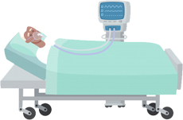

Перевозка больных – это сложная ответственная задача. Поэтому она должна проводиться силами квалифицированных специалистов, способных в случае необходимости осуществить своевременную медицинскую помощь. Служба «СуперМедик» оказывает услуги по перевозке больных в Москве, Московской области и регионах РФ. В нашем распоряжении есть специализированные автомобили класса B и C и новейшее медицинское оснащение для комфортной и безопасной доставки пациентов в полном соответствии с законодательством РФ.
Перевозка лежачих больных силами «СуперМедик»
Перечень услуг по перевозке пациентов, предоставляемый платными службами, гораздо шире. Нашими силами в требуемое место могут быть доставлены больные в любом состоянии, в том числе лежачие и инвалиды-колясочники.
Наши преимущества
Перевозка производится на современных автомобилях, оборудованных всем необходимым. В случае необходимости осуществляется родственное сопровождение.
Высокий профессионализм и опыт обеспечивают безопасность и комфорт при перевозке.

Возможна экстренная транспортировка больных (услуга срочного вызова), которая совершается в кратчайшие сроки после Вашего вызова.
Подготовка пациента
Правильная подготовка пациента включает в себя предварительное проведение всех гигиенических процедур, перевязки, а также ограничение в приеме пищи перед транспортировкой. Кроме того, необходимо собрать нужные личные вещи больного, лекарства, документы и сменную одежду.
Зачастую пациенты не в состоянии самостоятельно добраться до машины скорой помощи. И здесь наша служба применяет носилки или кресла-каталки. На протяжении всей транспортировки проводится постоянная проверка работы жизненно важных органов.
Платная перевозка больных в Москве и РФ — своевременная и эффективная медицинская помощь, от качества которой зачастую зависит жизнь человека. Благодаря высокой квалификации врачебного персонала и инновационному техническому оснащению служба «СуперМедик» успешно и компетентно справляться с поставленными задачами.
КРУГЛОСУТОЧНОЕсли вам или вашим близким необходима госпитализация или консультация по любым медицинским вопросам, пожалуйста, свяжитесь с нами по телефону:8 (495) 979-03-74
Цены на перевозку:
В пределах МКАД3 900 рублей
В пределах 10 км от МКАД4 500 рублей
В пределах 20 км от МКАД5 900 рублей
В пределах 30 км от МКАД6 900 рублей
В пределах 40 км от МКАД7 900 рублей
Перенос пациента по этажам200 рублей за этаж
Оборудование в каретах службы «СуперМедик»
N п/п
Наименование оборудования
Кол-во, шт
Примечание
1
Дефибриллятор-монитор со встроенным кардиостимулятором, пульсоксиметрией и неинвазивным измерителем артериального давления (Risus commodo viverra maecenas accumsan lacus vel facilisis)
1
2
Электрокардиограф трехканальный с автоматическим режимом
1
3
Аппарат управляемой и вспомогательной искусственной вентиляции легких для применения в транспортных средствах скорой медицинской помощи
1
4
Редуктор-ингалятор кислородный с 2-литровым баллоном
1
Обеспечение проведения кислородной (кислородно- воздушной) и аэрозольной терапии, а также подключения аппарата ИВЛ на месте происшествия и (или) при транспортировке в условиях скорой медицинской помощи
5
Аппарат ингаляционного наркоза газовой смесью кислорода азота портативный в комплекте с баллоном 1 л